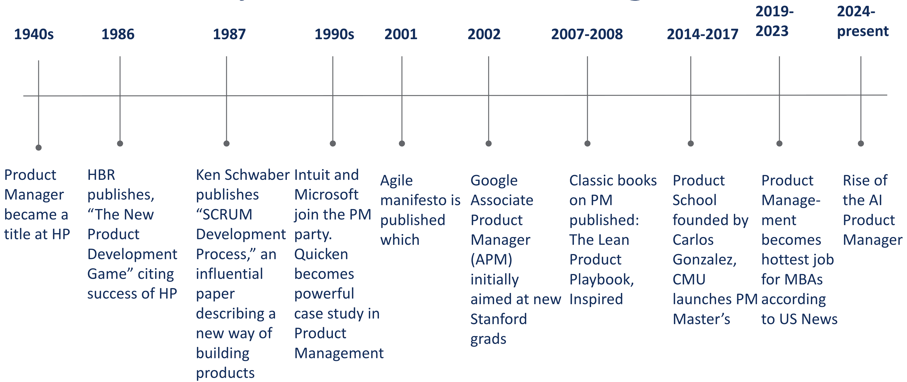
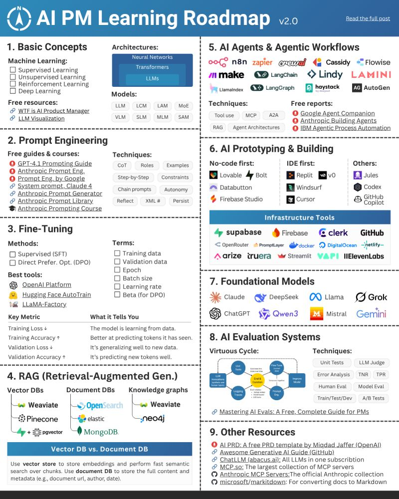

AI Product Management
STRAT 490R: Creating Digital Products with AI
AI Product Management
STRAT 490R
Scott Murff
History of Product Management
At its simplest, product management is about identifying customer needs, aligning them with business goals, and working with cross-functional teams to build products that succeed in the market. The person responsible is the Product Manager (PM), often called the “CEO of the product.”
Some people take issue with the “CEO” comparison, since product managers typically influence without formal authority and often don’t have many direct reports. Still, like a CEO, the skills of a product manager are broad and typically include:
- Strategic thinking – setting vision, making trade-offs, and aligning with business goals
- Customer insight – understanding user needs and pain points
- Analytical ability – using data and critical thinking to guide decisions
- Technical & design fluency – collaborating effectively with engineers and designers
- Execution & organization – planning roadmaps, prioritizing, and delivering results
- Communication & leadership – influencing, storytelling, and managing stakeholders
Products can be hardware or software, but since software dominates in volume, product management is often associated with software, even though many of the principles can apply equally well to hardware. Today, many hardware products come with a software component or integrated app, at times blurring the line between hardware and software. The focus of this course is software products that can be built with the assistance of AI.
Product Management, as a formal discipline and job title, traces its roots to Hewlett-Packard in the 1940s, where it emerged as a distinct driver of innovation in technology. Yet the concept predates HP: a 1931 Procter & Gamble memo introduced the role of “Brand Men,” whose responsibilities closely foreshadowed what would later be recognized as Product Management.
Early influences such as the [Scrum development process](https://en.wikipedia.org/wiki/Scrum_(software_development))) and the Agile Manifesto reshaped how products are built, while initiatives like Google’s Associate Product Manager (APM) program and influential books helped standardize best practices. In recent years, PM has become one of the most sought-after careers, and today the field is entering a new era with the rise of the AI Product Manager.

The personal computer revolution of the 1980s brought computing into offices and homes. The rise of the internet in the 1990s connected the world and created entirely new industries, from e-commerce to online media. In the 2000s, broadband (i.e. high-speed internet access) and cloud computing made software cheaper to build, scale, and distribute, while the launch of the iPhone in 2007 ushered in the smartphone era putting powerful applications directly into billions of people’s hands.
In 2011, Marc Andreessen, co-founder of the venture capital firm Andreessen Horowitz (a16z) (known for its influential early investments in companies like Facebook, Airbnb, and Coinbase) famously observed that Software Is Eating the World.
AI now appears to be on track to “eat the world” again, this time at a much faster pace. The launch of ChatGPT on November 30, 2022, marked a turning point, catalyzing mass adoption of generative AI and enabling the rise of the AI Product Manager.
Marc now predicts that AI Will Save the World, but this certainly won’t happen automatically. Because human nature is what it is, there will be plenty of people using AI in ways that are damaging to both individuals and society. Indeed, we are living in the time when:
“Discoveries latent with such potent power, either for the blessing or the destruction of human beings as to make men’s responsibility in controlling them the most gigantic ever placed in human hands. … This age is fraught with limitless perils, as well as untold possibilities.” –David O. McKay, in Conference Report, Oct. 1966, 4.
You have the incredibly exciting and challenging opportunity to harness AI to improve the world. This class will help prepare you to seize that opportunity.
- Over the past two decades, many companies adopted a product trio team structure for building software products.
- This structure brings together three complementary roles: the product manager, who defines the vision, strategy, and priorities; the designer, who ensures usability, aesthetics, and a seamless user experience; and one or more engineers, who turn ideas into functional, scalable solutions.
- By balancing business objectives, user needs, and technical feasibility, the trio has emerged as a proven way to foster cross-functional collaboration and accelerate product development..
AI and the tools we will use in this course are having a major impact and disrupting what had become a stable organizational model. This is true because AI changes both the division of labor within the trio and the speed and scale at which individuals and teams can operate.
AI Product Management
- With AI, a PM can quickly generate wireframes, mockups, or even working product demos without waiting on design or engineering support.
- Instead of handing off abstract requirements, they can test tangible ideas with users in days, not weeks.
- This doesn’t eliminate the need for designers and engineers, but it shifts when and how they are engaged.
- Designers can focus on higher-fidelity experience and brand expression, while engineers concentrate on scalability, integration, and technical soundness..
It remains to be seen how this will fully play out, but early indications suggest that shifts in how PMs, designers, and engineers work together are real and lasting. With the right AI tools some ambitious individuals may be able to wear all three hats to varying degrees.
Below are a selection of anecdotes from leaders in the field that provides some insight into how things are shifting.
AI-Powered PM
An AI-Powered PM utilizes AI tools as a core part of their own workflow to enhance productivity and efficiency in tasks like prototyping and coding.
It’s likely that eventually all PMs will eventually become AI-powered PMs. Individual companies will make this transition at varying speeds. It’s happening at companies like Shopify and Coinbase.
AI Product PM
An AI Product PM builds products where AI is a core feature. This means they need a good understanding of what AI can and can’t do, how to measure its performance, and how to design around its limitations. They balance accuracy, speed, cost, and safety. They work closely with engineers and designers to shape the product, test ideas, and ship features.
Becoming an AI Product PM is challenging because you must do everything a traditional PM does—defining problems, leading teams, and shipping products—while also deeply understanding how AI works. This means grasping its strengths, limits, risks, and how to design around them. Because the bar is so high, AI Product PMs have quickly become the best-compensated roles in product management.
Pawel Huryn has put together a comprehensive roadmap for becoming an AI Product PM shown below:
AI Product Management Learning Roadmap from Paweł Huryn
The Command Line
In order to be a serious AI-Powered PM or AI Product PM, you need to get comfortable interacting with your computer via the Terminal or command line.
The command line, sometimes referred to as the CLI (Command Line Interface), is a text-based way to control your computer by typing instructions instead of using a mouse or touch interface. You access the command line through a program called a terminal, which displays a simple text-only window (typically black or white) with no buttons or icons.
On macOS, this program is literally called Terminal. On Windows, you can use Command Prompt, PowerShell, or Git Bash to access a similar environment.
When using Visual Studio Code, you can open a terminal within it, making it easy to run commands without switching between windows.
When using the command line, instead of navigating through a graphical user interface (GUI) with windows and icons, you type commands directly into this terminal window and press Enter to execute them. The command line acts as your gateway to the underlying operating system, giving you direct access to files, programs, and system functions that might be buried deep within GUI menus or not available graphically at all.
This approach offers several advantages: greater precision in file operations, faster execution of repetitive tasks, access to powerful automation tools, and the ability to combine simple commands into complex workflows. Developers and data scientists rely on the command line because it’s faster and more powerful for tasks like creating projects, installing software, running code, and automating workflows.
ChatGPT and other LLM-powered generative AI tools have made learning the command line more important, not less. The command line is where you unlock the real power of automation, enabling you to run scripts and streamline repetitive tasks. Many advanced system administration tasks, programming tools, and server management operations are primarily designed for command-line use, making terminal proficiency essential for developers and savvy product managers.
Furthermore, the command line is the native environment for the industry-leading approaches to AI-assisted coding such as Claude Code, Codex, and Gemini CLI which we’ll be using throughout this class. By getting comfortable in the command line, you won’t just be learning an obscure developer skill; you’ll be stepping into the same environment where cutting-edge AI coding tools operate, giving you the ability to build, experiment, and ship AI products with confidence.
Now, let’s learn the command line by doing. Spend some time testing the following commands.
These commands work seamlessly across macOS or Windows but there is a little bit of extra set up on Windows.
If You Are Using Windows, Do This First
Step 1: Install Git Bash using winget
Within VS Code, open a Terminal and run:
This installs Git for Windows, which includes Git Bash.
After installation, verify that it worked:
If you see a version number (like git version 2.46.0), you’re ready to go.
Step 2: Set Git Bash as the Default Terminal in VS Code
- Open VS Code.
- Press
Ctrl + Shift + Pto open the Command Palette. - Type
Terminal: Select Default Profileand press Enter. - Choose Git Bash from the list.
- Open a new terminal tab (
Ctrl + ~) — it should now start withbash$orMINGW64instead ofPS.
Now your VS Code terminal behaves almost identical to macOS (with a few exceptions noted below), and you can copy-paste the commands below directly.
Print working directory you are currently in
List files in the current directory
Change directory
Go up one level
Go to your home directory
Make a new directory
Open your new folder in Finder (Mac) or File Explorer (Windows) On macOS, this uses the built-in open command. On Windows (Git Bash), explorer.exe opens File Explorer.
Create or overwrite a file with text > acts like “Save As” — it overwrites the file.
Append text to a file >> acts like “Add to end” — it appends text instead of overwriting.
Show file contents
Combine files into a new file
Copy a file
Remove a file
Remove a folder (recursively — be careful!)
Open a website in Google Chrome macOS uses open -a, while Windows (Git Bash) can call Chrome directly if it’s on the PATH.
# macOS
open -a "Google Chrome" https://claude.ai
# Windows (Git Bash)
"/c/Program Files/Google/Chrome/Application/chrome.exe" https://claude.aiOpen a Word document On Windows (Git Bash), use the start command to launch Word if installed.
Summary Notes
- These commands work identically on macOS, Linux, and Windows when using Git Bash or WSL.
>overwrites a file (like “Save As”).>>appends to a file (like “Add to end”).
Gotchas
- Paths with spaces: quote them — cd “My Folder”
- Case sensitivity: macOS/Linux are usually case-sensitive; Windows is not.
- rm is more permanent than dragging something to the Trash/Recycle Bin. By default, it doesn’t send files to a “trash”, it permanently deletes them. Use with caution!
Package management
- The next concept to tackle on the journey to becoming an AI powered Product Manager is package management. This is a tool your computer uses to install, update, and remove software through the command line.
- Instead of hunting down installers on websites and clicking through “Next, Next, Finish,” a package manager lets you type a single command to get the tool you need.
- This matters because it saves time, keeps your environment consistent, and makes it easy to update everything at once which is a helpful when building digital products that depend on multiple tools and libraries.
- Learning to use a package manager puts you in control of your setup, reduces errors, and helps you work like a professional..
On Mac, Homebrew is the standard package manager and must be installed.
For Windows, Winget comes pre-installed.
Run the following commands to install and/or check the version of your package manager.
Winget comes pre-installed on Windows 10 and 11 so there is generally no need to install it.
Let’s now use the package manager to install a couple of software packages we will need. You can first check if you already have these installed.
Terminal refresh: You might need to close and reopen PowerShell/Terminal for the new PATH entries to be picked up.
Multiple versions: If you already have another Python, whichever comes first in your PATH will be the one that runs when you type python.
We also need to install something called Node.js which is a tool that lets us run JavaScript programs, and we need it (along with npm, its package installer) before we can set up Claude Code or the Gemini CLI.
Now we can install Claude Code, Codex, and/or Gemini CLI which we will use soon.
First you need to sign up for a paid account from one of these providers:
After signing up for a paid account run the following commands to install the relevant CLI agents.
If it successfully installed, keep reading. We will start up Claud Code soon from within VS Code.
VS Code
- Next we’ll get set up with Visual Studio Code (VS Code), a free, open-source code editor developed by Microsoft that has become one of the most popular development environments among programmers worldwide.
- Launched in 2015, VS Code combines the simplicity of a lightweight text editor with powerful IDE-like features including intelligent code completion, debugging capabilities, built-in version control integration, and an extensive marketplace of extensions that can add support for virtually any programming language or development workflow.
- Its cross-platform availability (Windows, macOS), fast performance, and highly customizable interface have made it a favorite among developers working on everything from web applications to machine learning projects.
- We will build applications within VS code throughout the semester..
Let’s install it via the package manager.
Note: The –cask flag tells Homebrew to install a GUI application rather than a command-line tool.
Claude Code
- Claude Code is a command-line tool that enables developers to delegate coding tasks directly to Claude AI from their terminal, creating an agentic coding experience where Claude can autonomously handle complex development workflows.
- Unlike traditional AI coding assistants that provide suggestions, Claude Code allows Claude to take full ownership of coding tasks, from analyzing requirements and planning implementation to writing, testing, and iterating on code across multiple files and directories.
- The tool is designed to integrate seamlessly into existing development workflows, allowing developers to describe what they want to build in natural language and have Claude execute the entire development process, including debugging, refactoring, and implementing best practices, while maintaining transparency through detailed logging and the ability for developers to review and approve changes at each step..
Of course this won’t build you a perfect, complicated application all by itself but it figuratively gives you a rocket pack, crane, and power tools while building a house.
Code your first app
Open VS Code and create a new directory where you will save your application files.
File and folder naming principles
AI will often help create file names for you, but when manually creating files or folders, the following guidelines are highly recommended:
General Naming Principles
- Use lowercase → avoids cross-platform issues.
- Hyphens (
-) instead of spaces or underscores.
Example:data-cleaninginstead ofData_Cleaningordata cleaning. - Be descriptive but concise.
Example:customer-surveys-2025.csvis better thancs25.csv. - Avoid special characters → stick to letters, numbers, and hyphens.
- Stay consistent with tense and plurality → e.g., always plural for folders (
scripts/,images/).
Folders
Think of folders as categories of content. Common conventions: - src/ → source code - data/ → raw and/or processed datasets - docs/ → documentation - tests/ → unit/integration tests - notebooks/ → Jupyter or research notebooks - scripts/ → automation scripts
Files
Files should indicate what they contain or do, not just generic names.
Code files:
train-model.py,evaluate-model.py,preprocess-data.pyConfiguration files:
model-config.yaml,db-settings.jsonNotebooks (keep order with numbers or dates):
01-data-exploration.ipynb,02-feature-engineering.ipynbDocumentation:
README.md(always in the root folder),CONTRIBUTING.md,CHANGELOG.md
Using the command line, make a new folder to contain your project files
Start up Claude Code via the terminal within VS Code.
After starting Claude, turn on Explanatory Mode within Claude which will provide “educational ‘insights’ in between helping you complete software engineering tasks and will help you understand implementation choices and codebase patterns.”
Notice that changing the output style created a .claude file.
A .claude file is a configuration file used by Claude Code. These files help define project-specific settings and instructions for how Claude should approach coding tasks in your project.
.claude files typically contain:
- Project context and instructions - Information about your project’s structure, coding standards, and specific requirements
- File patterns and exclusions - Rules about which files Claude should or shouldn’t modify
- Custom prompts and guidelines - Specific instructions for how you want Claude to approach coding tasks in this particular project
These files allow you to give Claude persistent context about your project so you don’t have to re-explain your codebase structure, conventions, or preferences every time you use Claude Code. They essentially act as a “memory” for Claude about how to work effectively within your specific project.
Now, copy paste the following prompt into the active Claude Code terminal session in order to build our first app with Claude Code.
Build me a simple todo list app using streamlit. Use a json file as the database.
What is streamlit?
Streamlit is an open-source Python framework for quickly building interactive, data-driven web apps without needing to know front-end development (like HTML, CSS, or JavaScript).
Key Features Include:
- Simplicity: You can turn a Python script into a shareable web app with just a few lines of code.
- Widgets: Built-in components (sliders, dropdowns, checkboxes, file uploaders, etc.) make it easy to collect user input.
- Data Visualization Integration: Works seamlessly with libraries like Pandas, NumPy, Matplotlib, Plotly, and Altair.
- Deployment: Apps can be hosted on Streamlit Community Cloud or deployed on your own servers.
What is JSON?
JSON (JavaScript Object Notation) is a lightweight way of storing and sharing data. You can think of it like a digital “box” that holds information in a very organized way, using pairs of keys and values. For example:
{
"name": "Alice",
"age": 20,
"isStudent": true
}
In this example:
- “name” is the key, and “Alice” is the value.
- “age” is the key, and 20 is the value.
- “isStudent” is the key, and true is the value.
JSON is popular because it’s easy for humans to read and easy for computers to understand. It’s often used when apps, websites, or programs need to send information to each other.
How many lines of code does a production grade business application typically require?
A production-grade business application for internal use typically ranges from 10,000 to 500,000+ lines of code, depending on several key factors: Small to Medium Internal Apps (10K-50K lines)
Simple CRUD applications with basic workflows Departmental tools with limited integrations Small team usage (10-100 users)
Medium Business Applications (50K-200K lines)
Multi-module systems with complex business logic Integration with several external systems Company-wide usage (100-1000+ users) Advanced reporting and analytics features
Large Enterprise Applications (200K-1M+ lines)
Comprehensive business management systems Extensive integrations and APIs Multi-tenant or highly scalable architectures Complex compliance and security requirements
Factors that significantly impact size:
Complexity of business logic - Financial calculations, approval workflows, etc.
Number of integrations - APIs, databases, third-party services
User interface sophistication - Simple forms vs. rich dashboards Technology stack - Some frameworks require more boilerplate code
Code quality practices - Well-structured code with proper separation of concerns Testing coverage - Test code can represent 30-50% of total codebase
Modern considerations: Many internal applications today leverage low-code platforms, cloud services, and existing frameworks, which can reduce custom code requirements significantly. A modern internal app might accomplish what previously took 100K lines with just 20-30K lines by using pre-built components and services.
Code your second app
Spend the next 15 minutes coming up with another application. For simplicity for now, continue using streamlit (i.e. include in your prompt that the application should be built using streamlit).
Student Demos
Let’s see some of the apps that you built.
Questions?
Thank you!
STRAT 490R: Creating Digital Products with AI

?meta:course